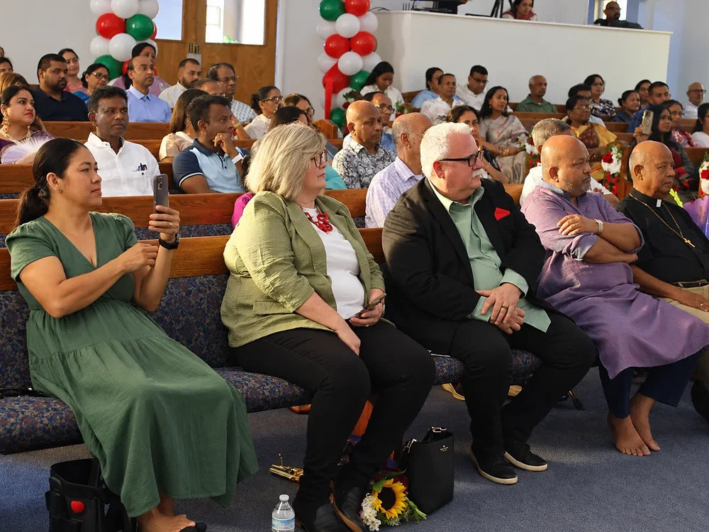

Welcome Home
Grace and Praise Bangladeshi Church
Living in Grace. Rising in Praise.
The first Bangladeshi church in Southern California — Bangladesh roots, an American home, one family in Christ.
- Sunday
- 5:00 PM
- Location
- San Bernardino, California
Bengali & English Worship Everyone Welcome
 Worship
Worship

Community Family
Family